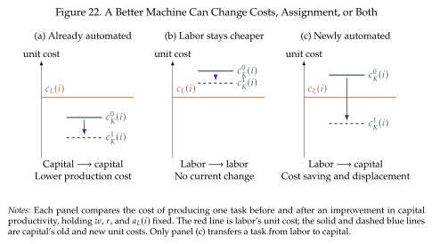
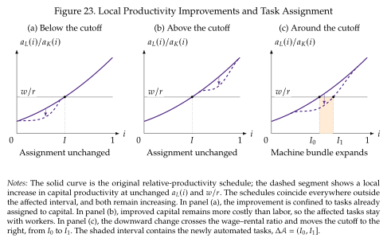

What changes when a task is automated?¶
As in previous sections, capital and labor cost \(r\) and \(w\) per unit, and their productivities in task \(i\) are \(a_K(i)\) and \(a_L(i)\). The firm uses \(k(i)\) units of capital and \(\ell(i)\) units of labor to produce task \(i\)
Tasks are combined with elasticity \(\eta\) as in (5.1).
The key question is how tasks are assigned between capital and labor. We saw that this assignment follows the principle of comparative advantage, so that we assign tasks to the input with the lowest effective unit cost. The unit cost incorporates both the direct cost of paying for the capital or labor being used and the productivity that each input has in performing the task. Both margin matter because the assignment changes in a similar way if the input gets cheaper (say, a lower \(r\)) or if the input gets more productivity (a higher \(a_k(i)\)). In both cases we need to pay less to produce the same.
Accordingly, we give the two unit costs short names:
We have added a superscript \(t\) to the unit cost of performing tasks with capital to distinguish capital's technology before and after the innovation. If capital cannot perform a task, we set its unit cost to infinity; equivalently, its productivity in that task is zero.
The assignment rule is to use the input with the lower unit cost. The tasks assigned to capital are those being automated; we refer to them as \(\mathcal{A}\):
When technology changes (going from \(t=0\) to \(t=1\)) the set of automated expands tasks in \(\Delta \mathcal A\) were performed by labor and are now performed by machines. This is the extensive margin of automation. The arrival of the capability and its adoption are different: a machine that can perform a task will only be used if doing so makes sense for the firm; only if the unit cost falls below that of labor.
Three possibilities for a better machine¶
Suppose capital becomes more productive in a task, so \(c_K^1(i)<c_K^0(i)\). The effect depends on where these costs lie relative to \(c_L(i)\) as we show in Figure 22 (Steinsson 2026, Section~7.3):
- The task was already automated. If \(c_K^1(i)<c_K^0(i)<c_L(i)\), the machine continues to perform it at a lower cost. This improves productivity at the intensive margin, without directly removing a task from labor, so there is no extensive margin effect. A faster conveyor carrying the same components is an example.
- Labor remains cheaper. If \(c_L(i)<c_K^1(i)<c_K^0(i)\), the firm continues to use labor. The improvement does not yet change the assignment of tasks and so there are no effects. Think of this as the development of LLM models before the release of chatGPT. They were better than previous technology, but were not good enough to perform any task.
- The task switches from labor to capital. If \(c_K^1(i)<c_L(i)\leq c_K^0(i)\), the task enters \(\Delta \mathcal A\). The innovation both reduces production costs and displaces labor from the task. Think of software taking over the processing of records previously assigned to clerical workers.

Moving the assignment cutoff¶
When \(a_L(i)/a_K(i)\) is increasing, we can summarize assignment with the cutoff \(I\) from Section 5.2. In this case, relative labor productivity is higher for higher-indexed tasks and so only low-indexed tasks are automated. A technology that expands the capital bundle from \([0,I_0]\) to \([0,I_1]\) automates \(\Delta\mathcal{A}=(I_0,I_1]\).
A rise in capital productivity lowers the relative productivity of labor and can end in automation at given \(w/r\). But, as we just discussed, the technology may also improve tasks already assigned to capital, so a single innovation can combine extensive and intensive effects. Figure 23 expands the three cases of Figure 22 to the full relative-productivity schedule. In the first two panels the improvement leaves the cutoff unchanged; in the third, the local downward shift moves the cutoff to the right and expands the machine bundle.
